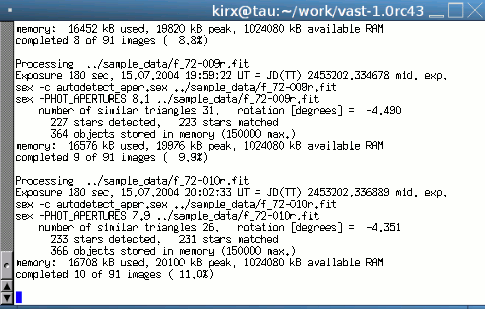
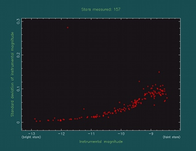
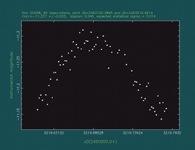
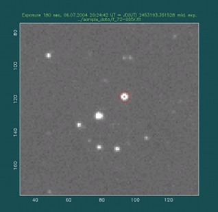

VaST [Variability Search Toolkit]
A software for variable star detection
on a series of astronomical images
The up-to-date version of this document is avaliable at http://scan.sai.msu.ru/vast/
See the VaST paper for a detailed description of the code.
- Contents
-
What is VaST?
Screenshots
Download
Usage
Output files
VaST mailing list
News/Release notes
Frequently Asked Questions
Publications using VaST
Other useful tools
VaST is a software tool for finding variable objects on a series of astronomical images. The images (CCD frames or digitized photographic plates) must be taken with the same instrument using the same filter and saved in the FITS format. CCD images should be calibrated (dark-subtracted and flat-fielded). The input images may be shifted and rotated with respect to each other, but they have to have the same scale (arcsec/pix). The images in a series should overlap by at least ~40% to ensure successful cross-identification. VaST performs object detection and aperture photometry using SExtractor on each image, cross-matches lists of detected stars, performs magnitude calibration with respect to the first (reference) image and constructs a lightcurve for each object. The sigma-magnitude, Stetson's L variability index, Robust Median Statistic (RoMS) and other plots may be used to visually identify variable star candidates. If data permit, period-search techniques may be employed to identify periodic variable stars among the candidates. All lightcurves are constructed in arbitrary magnitudes with zero magnitude corresponding to the background level on the reference image. If there are reference stars with known magnitudes in the field of view, all magnitudes can be later converted to the standard system.
Unlike software based on the image subtraction method, VaST can be used in case of unstable PSF (e.g., bad guiding or with digitized wide-field photographic images). VaST is not tied up to any external catalog and WCS (if operated in its main "variable star search" mode), so it can be used on images taken with a telephoto lens as well as with a 2.6-m class telescope. If needed, absolute astrometric calibration may be performed through an interface to the Astrometry.net code allowing one to perform automatic magnitude scale calibration and variable star identification (however, this will work only if the input images are large enough to perform blind plate solution).
VaST is written in C (and partly in BASH scripting language) for GNU/Linux operating system. The latest versions are also tested on MacOS X and FreeBSD. The best practical way to run VaST under Windows is through Linux installed in a virtual machine (e.g. VirtualBox, see also a collection of pre-built VirtualBox images). The AAVSO forum thread mentions attempts to run VaST under Windows with Cygwin, but the results seem to be inconclusive. On all the supported systems VaST is able to utilize multiple processing cores to perform most of its computations in parallel.
VaST is free software: you can redistribute and/or modify it under the terms of the GNU General Public License. The program is in a continual, albeit slow, state of development. You are welcome to contribute bug reports, patches and feature requests: please write me at kirx[at]scan.sai.msu.ru
Screenshots
Various VaST subroutines (lightcurve plotter, image viewer) may be started automatically from the main program or manually by a user from a terminal. Names of the corresponding executable files are given under each screenshot. Click on images to see them in high resolution:|

VaST (the main program) running in a terminal ./vast
|

The variability search window ./find_candidates
|
|

The lightcurve inspection program ./lc
|

VaST FITS image viewer ./pgfv
|
{kind=link}
{kind=link}
{kind=link}
{kind=link}
Getting VaST
To compile and use VaST you'll need:- GNU/Linux or MacOS X or FreeBSD and some basic skills in using one of these operating systems through a command line interface (terminal)
- GCC (including Fortran and C++ compilers), comes with your GNU/Linux distribution. Note that you need to install GCC on MacOS X and FreeBSD as VaST will not work with the native clang compiler.
- BC calculator (can be found in your GNU/Linux distribution)
- cURL (can be found in your GNU/Linux distribution)
- SExtractor. If SExtractor is not installed system-wide, VaST will use the built-in SExtractor.
You can find at this page the latest version of VaST (download via ftp or http, ~15M) along with the sample data set (ftp or http, 24M).
Files described here as well as older versions of VaST are available via our anonymous FTP.You may download VaST with the command
cd vast-1.0rc82
If compilation fails, read the output carefully. Most probably it can't find some necessary libraries, header files or external programs. Please install the required programs and try to compile VaST again. If you are sure that the needed libraries and headers are installed in the system but the compiler cannot find them, try to open Makefile with a text editor and change the libraries locations to match your environment. Very old versions of VaST require PGPLOT, CFITSIO and GSL libraries to be installed in your system, but most likely you don't want to use such an old VaST version.
Special note for Ubuntu users! The following installation procedure is recommended:- Install these libraries from pre-compiled Ubuntu packages. On older Ubuntu
versions use:
sudo apt-get install build-essential gfortran g++ libX11-dev libXi-dev libXmu-dev libpng-dev curl wgetand on newer Ubuntu/Linux Mint:sudo apt-get install build-essential gfortran g++ libx11-dev libxi-dev libxmu-dev libpng-dev curl wgetIf you want to install a newer SExtractor and PSFEx in order to perform PSF-fitting photometry with VaST, you'll need to install alsosudo apt-get install libfftw3-dev libatlas-base-devWhen compiling SExtractor and PSFEx from the source code, specify explicitly the location of ATLAS include files:./configure --with-atlas-incdir=/usr/include/atlas && make && sudo make install
- Compile VaST as described above
- Install some basic development tools (login as root or use sudo):
yum install gcc gcc-c++ gcc-gfortran libX11-devel libpng-devel
- Compile VaST as described above
VaST was also reported to successfully compile on OS X 10.11.6, Xcode 8.0 (8A218a) and gcc version 4.9.3 (MacPorts gcc49 4.9.3_0).
A common problem on MacOS X systems is the mismatch between the versions of a manually installed gfortran and the default system gcc. In that case, you may need to manually install gcc, g++ and gfortran as described here add the directory with the new binaries in the begining of your PATH, the command should look something like
Special note for FreeBSD users: VaST scripts may fail to compile the internal copy of PGPLOT library. If that happens, please install PGPLOT system-wide with the command (as root):
Using VaST
Brief usage instructions in Russian may be found here.To try VaST, download the sample data set, unpack it
tar -xvjf sample_data.tar.bz2
./vast ../sample_data/*fit
If you quit the program without deleting any data, you can restart it without doing all the computations again by running:
To calibrate the magnitude scale using comparison stars with known magnitudes within the field of view use this script:
After the comparison stars have been specified, close the image window with the right mouse click and inspect the relation between instrumental and catalog magnitudes. This relation may be fitted by a linear function with the slope fixed to 1, linear function with a free slope, second degree polynome (parabola) or the Bacher et al. (2005, MNRAS, 362, 542) magnitude calibration relation a.k.a "photocurve". This option is suitable for processing digitized photographic plates. Use (P) key on your keyboard to change the fitting function. For most CCD data sets, linear function with the fixed slope provides a good fit. The data points may be weighted according to their estimated errors or weighted equally. Use (W) key to change weighting. Close the dialog with the right mouse click to apply the calibration to all stars when you are satisfied with the fit.
If the image field of view is large enough to be blindly solved with Astrometry.net code (as described below), one can automatically match stars detected on the image to the UCAC4/APASS catalog by running the magnitude calibration script with a command line argument specifying the observing band:
In order to save the current work, use the script
To delete all files from the previous work, you can use:
There is a tool to automatically identify variable stars detected with VaST. It requires a working Internet connection at runtime. The tool may or may not work for your field depending on luck. If the field of view is greater than, say, 30' and the image quality is fine - the odds that the automatic plate solution will work for your field are pretty good. Here is how to use it... To identify the star number 00190 in the current dataset use the following command:
A note on the graphical user interface
The VaST GUI is based on the PGPLOT library. The main reasons are that this library is perfectly suited for displaying and editing data and image plots and is so easy to use from the developer's standpoint. The problem is that the resulting interface may look counterintuitive. The unusual thing about the VaST interface is that it has no buttons. (There is a way to program a GUI with buttons and graphical input fields in PGPLOT, but, trust me, you'll not be impressed by its look and usability.) So, whenever a user has a choice between multiple possible actions, instead of clicking a button to execute the desired action, a user will have to physically press a key on a keyboard. The list of possible keys is always displayed by VaST at the terminal. Please have a look there to know your options. Some actions are common to all VaST windows:- To select a data point on a plot (or a given pixel of an image) - click on it with the left mouse button.
- To close a window - click the right mouse button anywhere in the window.
- To zoom in - use exactly the following sequence of actions: 1) put the cursor in one corner of the area you want to zoom at, 2) press 'Z' on keyboard and release the key, 3) specify the size of the area you want to zoom at by moving the mouse, 4) click the left mouse button to confirm your selection.
- To zoom out - press 'Z' key on a keyboard twice.
Using VaST with scanned photographic plates
If you have to deal with digitized photographic materials, you'll want first to convert TIFF images (which are typically produced by scanner software) to the FITS format. It can be easily done with the tiff2fits converter. Do not forget to change your images to positive (white stars on black sky). For example:
Say, you have digitized photographic images in "photo_data" directory. To run VaST on them, change to the VaST directory and run the program
./vast -o ../photo_data/*fit
An example photographic dataset is available here. Beware, it's about 1G in size!
You may find some more details in the ArXiv:1403.5334 e-print "A search for new variable stars using digitized Moscow collection plates".
Search for transients with VaST
Apart from the standard "variable star search mode", where a long series of images is processed and lightcurves of detected stars are explored using the sigma-magnitude plot, VaST can be also used in the specialized "transient detection mode". In this mode VaST will process a series of four images: two first-epoch (reference) images and two second-epoch images. VaST will generate an HTML report containing a list of candidate transients. The transients are defined as either objects that were not visible on the reference images, or where at least 1 mag. fainter compared to the second-epoch images. Two first-epoch images are needed because image artifacts and star blending may cause VaST to miss a star on a single reference image, so it will appear as a false transient search mode is available. If there are two reference images - chances that the program will fail to detect a star at both of them is greatly reduced. Also note that two different reference images are needed: it would be impossible to "cheat" the program by feeding the same image to it twice.
An example dataset that allows one to test the transient search mode is available here.
The unpacked archive will contain two sub-directories with reference and second-epoch images. The search should be conducted in two steps:
Known limitations:
- The transient detection capability is still in the testing stage and is FAR FROM PERFECT, sorry...
- You'll need a reasonably high-speed Internet connection with unlimited traffic to efficiently use the transient-detection capability. An effort is made to reduce the Internet traffic to the necessary minimum. However, at the first start, the program will need to download ~200M of catalog data. During the routine work, the program will need to transmit a few 100K of data for every processed image (necessary for astrometric image calibration using the external server). The Internet connection is also needed to access external web-databases that would allow you to check the detected transient candidates.
- There are two transient-detection scripts for your to consider: util/transients/search_for_transients_single_field.sh is the simplified one that searches for transients in a single field. util/transients/transient_factory_test30.sh is a more complex one, that is actually used to process NMW survey data. These scripts cannot cover all possible situations and should serve an example and inspiration for you to write your own script appropriate for your setup.
- Image field of view should be sufficiently large to allow automatic plate solution with Astrometry.net software. The default value is 180 arcmin, if your field of view is smaller - you should edit the transient detection script util/transients/search_for_transients_single_field.sh .
- The magnitude calibration is based on V magnitudes of Tycho-2 stars. If this is not appropriate for your system, please contact me and I'll try to develop an alternative calibration strategy for your setup.
- Reference images should be two different images obtained during one night. The reason behind using two reference images (instead of one) is the attempt to minimize the number of cases where SExtractor fails to deblend two stars on the reference image, but can successfully perform deblending on the second-epoch images. In this case, one of the two stars that "appeared" in the detection lists for the second epoch will be erroneously marked as a transient. The other measure that can minimize such errors is to try to use images with the best seeing as reference.
- There are two files controlling the star-detection behavior of SExtractor: default.sex and default.conv . You may refer to SExtractor documentation for a detailed description of these files. You may find a few examples of
default.sex and default.conv
files in the VaST directory. The default files are meant to work for a wide variety of CCD images, however they may not provide an optimal star detection efficiency for a particular instrument. The two files fine-tuned for the
"transient_detection_test_Ceres" dataset are default.sex.telephoto_lens and default.conv.telephoto_lens . To use them instead of default files, just copy these files:
cp default.sex.telephoto_lens default.sex cp default.conv.telephoto_lens default.convYou may want to edit these file to match your own setup.
Some switches that you may use with VaST
"-P" — perform PSF-fitting photometry with SExtractor and PSFEx."-9" — use DS9 instead of VaST's own viewer pgfv to view FITS files.
"-u" — always assume UTC time system, don't perform conversion to TT.
"-k" — force VaST to ignore the "JD" keyword in FITS headers.
"-x2" — accept stars with non-zero SExtractor flag: 2 - blended stars, 4 - saturated stars, 99 - accept everything.
"-e" — failsafe mode: only stars detected on the reference frame will be processed.
"-p" — tell VaST that it deals with a linear detector. This flag is useful for well calibrated CCD images, but for some CCD images it is better not to use it. Test what works best for your particular dataset!
"-o" — tell VaST that it deals with a digitized photographic plate. The magnitude calibration between frames will be done using the relation proposed by Bacher et al. (2005, MNRAS, 362, 542).
"-l" — perform sigma-filtering of lightcurves.
"-r" — assume that images are not rotated with respect to each other by more than 3 degrees.
To get the full list of the available command line arguments run:
Description of output files produced by VaST
After processing an image series, VaST will create a number of files in its working directory that may be useful for a future work or problem debugging.- Each "outNNNNN.dat" file contains an individual lightcurve of a star
numbered NNNNN. This is a simple ASCII file that may be viewed in a text
editor. The format is the following:
- 1st column - JD(TT) (default) or JD(UTC) (if VaST was started with "-u" flag) - 2nd column - magnitude (with respect to the background level on the reference image if an absolute calibration was not done yet) - 3rd column - estimated magnitude error - 4th column - X position of the star on the current frame (in pixels) - 5th column - Y position of the star on the current frame (in pixels) - 6th column - diameter of the circular aperture used to measure the current frame (in pixels) - 7th column - file path corresponding to the current frameThe extra columns specific to VaST may be easily removed as followsutil/cute_lc out00183.dat > out00183_JD_mag_err.datthe output file out00183_JD_mag_err.dat will contain only three columns "JD", "mag" and "err". By default, util/cute_lc prints its output to stdout. If no lightcurve file name is provided as a command line argument, util/cute_lc will expect the input lightcurve to be sent to its stdin. You may easily change the number of digits returned by util/cute_lc by editing its source code file src/cute_lc.c and recompiling VaST (make).
- "data.m_sigma" file contains the information used to produce the sigma-magnitude plot. It has the following format:
- 1st column - mean magnitude of a star - 2nd column - estimated sigma (standard deviation) of its lightcurve - 3rd column - X position of the star on the reference frame (in pixels) - 4th column - Y position of the star on the reference frame (in pixels) - 5th column - outNNNNN.dat file containing the lightcurve of this star
- "vast_summary.log" file summarizes the processing results. Its format is rather self-explanatory:
Images processed 91 Images used for photometry 91 Ref. image: 2453192.38950 05.07.2004 21:18:19 ../sample_data/f_72-001r.fit First image: 2453192.38950 05.07.2004 21:18:19 ../sample_data/f_72-001r.fit Last image: 2453219.49141 01.08.2004 23:45:04 ../sample_data/f_72-091r.fit JD time system (TT/UTC/UNKNOWN): TT Transient candidates found: 34 Number of SysRem iterations: 0 Computation time: 14 seconds SExtractor parameter file: default.sex Total objects detected: 510 Objects passed selection criteria: 174 Measurements per detected object (mean, median, min, max): 34.2 16.0 2 91 Measurements per selected object (mean, median, min, max): 78.3 84.0 40 91 Average stars detected per image: 210.989 Average stars matched: 203.89 (96.6354 %) Memory usage VmPeak: 745564 kB Software: VaST 1.0rc64 compiled with gcc (Gentoo 4.7.2-r1 p1.5, pie-0.5.5) 4.7.2 SExtractor version 2.8.6 (2012-11-23) Processing completed on Sat Apr 13 07:04:41 UTC 2013Note however that the "Transient candidates found" line should be ignored in most cases. At this moment, transient detection is supported in the special four-image transient detection mode described above.
- "vast_image_details.log" file contains information about processing of individual images:
exp_start= 05.07.2004 21:18:19 exp= 180 JD= 2453192.38950 ap= 7.2 rotation= 0.000 *detected= 334 *matched= 334 status=OK ../sample_data/f_72-001r.fit exp_start= 05.07.2004 21:21:30 exp= 180 JD= 2453192.39172 ap= 7.1 rotation= -0.106 *detected= 329 *matched= 310 status=OK ../sample_data/f_72-002r.fit exp_start= 05.07.2004 21:24:41 exp= 180 JD= 2453192.39393 ap= 7.0 rotation= -0.157 *detected= 337 *matched= 315 status=OK ../sample_data/f_72-003r.fit exp_start= 05.07.2004 21:27:52 exp= 180 JD= 2453192.39614 ap= 6.9 rotation= -0.020 *detected= 345 *matched= 330 status=OK ../sample_data/f_72-004r.fit exp_start= 06.07.2004 20:24:42 exp= 180 JD= 2453193.35227 ap= 6.2 rotation= -0.021 *detected= 416 *matched= 321 status=OK ../sample_data/f_72-005r.fit ...If an image could not be processed, this will be indicated by "status=ERROR".
- "vast_command_line.log" contains the command line with which VaST was started, so the exact processing parameters can be always figured out.
- "vast_sigma_selection_curve.log" contains the "sigma-selection curve" displayed on the sigma-magnitude plot.
- "vast_stars_with_large_sigma.log" contains the list of stars that are above the "sigma-selection curve" on the sigma-magnitude plot. The file format is identical to the one of "data.m_sigma" file. The stars listed in "vast_stars_with_large_sigma.log" have larger-than-average scatter of their lightcurves and may be investigated further, e.g., with period-search software.
- "vast_magnitude_calibration_details_log" is a directory containing details of the frame-to-frame magnitude calibration process. The details may be viewed as follows:
cd vast_magnitude_calibration_details_log for i in *.calib ;do ../lib/fit_mag_calib "$i" "$i"_param ;doneThis is useful mostly for debugging purposes.
- "image*.cat" files are the raw SExtractor catalogs. Their format is defined in the "default.param" file (see SExtractor documentation). The correspondence between the catalogs and input images is given in the "vast_images_catalogs.log" file. These catalogs are useful mostly for debugging purposes.
- "image*.cat.aperture" files contain the aperture diameter (in pixels) used to produce a given SExtractor catalog.
- "vast_memory_usage.log" contains information about VaST usage of RAM.
- "vast_list_of_all_stars.log" contains pixel coordinates of all selected stars in the reference frame of the first (reference) image. Both stars actually detected on the first frame and the ones detected only on other frames are listed.
- "vast_list_of_all_stars.ds9" is the same as "vast_list_of_all_stars.log" except it is formatted as a DS9 region file (to be loaded into the DS9 FITS image viewer).
VaST mailing list
If you would like to receive updates about new versions of VaST, please enter your e-mail address in the form below or just drop a line to kirx[at]scan.sai.msu.ruRelease notes
01 Oct 2018: vast-1.0rc83:
* A careful review and refactoring of almost the entire VaST C-code tree was performed by Vladimir Bazilevich.
* The variable identification script 'util/search_databases_with_vizquery.sh' will now try to identify
the input object with Gaia DR2 in addition to USNO-B1.0 and display its Gaia DR2 variability status
(VARIABLE/CONSTANT/NOT_AVAILABLE) and if it's listed in Gaia DR2 Cepheid, RR Lyrae, LPV or Short-timescale
sources catalogs (see http://vizier.u-strasbg.fr/viz-bin/VizieR?-source=I/345&-to=2 ).
You may test the new output by running:
util/search_databases_with_vizquery.sh 22:02:43.29139 +42:16:39.9803
* The variable identification script will search the ASASSN-V catalog downloading its local copy (currently 71M) at first use.
* VaST will now automatically update the local copies of ASASSN-V and VSX catalogs, as well as the asteroid
database astorb.dat if they are more than one month old. The relevant code is in lib/update_offline_catalogs.sh
You may run this script as 'lib/update_offline_catalogs.sh all' to download/update all catalogs.
Note that the variable star catalogs are checked by the script util/search_databases_with_vizquery.sh in the following order:
1. VSX (offline copy) -- if available
2. ASASSN-V (offline copy)
3. GCVS (online)
4. VSX (online)
5. other catalogs in selected sky areas.
The catalog search is performed until the first match is found. The (unintended) consequence of this is that
the displayed variable star name may depend on the available catalogs. For example if the local copy of VSX
is available, the search 'util/search_databases_with_vizquery.sh 34.8366337 -2.9776377' will result in
"omi Cet" while if there is no local copy of VSX, the variable will first be found in the ASASSN-V
catalog and its name will be displayed as "ASASSN-V J021920.94-025841.2".
* VaST will now drop one of the top-ten brightest stars from the instrumental (image-to-image) magnitude calibration.
The excluded star is the one that changes the instrumental magnitude/reference magnitude fit the most.
This helps to handle the situation when the variable is one of the few brightest stars on frames.
If the variability amplitude is sufficiently small to bypass the old outlier rejection algorithm,
such variable could influence the magnitude calibration (due to its high weight as a bright star)
and introduce artificial variability in other stars.
Thanks to Vladimir Bazilevich for providing data that highlighted this problem!
* Updated the dark frame subtraction ('util/ccd/ms') and flat-field division ('util/ccd/md') routines
to better handle images with overscan. Numerous bug fixes in these routines.
* The PSF-quality filter (active in the PSF photometry mode) is disabled for the brightest stars on
frame (along with the A_IMAGE and FWHM_IMAGE vs. mag filters). The relevant code is in src/filter_MagSize.c
* VaST was not recognizing the long version of the '--aperture' command line option. This has been fixed.
* Updated the internal copy of CFITSIO to version 3.440. The HTTPS support is disabled in the library
to avoid the dependence on libcurl - no web access is performed through the CFITSIO functions in VaST.
16 Apr 2018: vast-1.0rc82:
* Fixed the bug that caused VaST to segfault in some circumstances.
* Fixed the bug in the lightcurve viewer './lc' that was causing a crash when the input
lightcurve file was outside the VaST working directory.
* Fixed the broken counter of stars rejected as having a bad PSF-fit in the PSF photometry mode.
The counter was stuck displaying the value for the reference image, not the current image.
* Fixed the bug that caused the UCAC plate solver to work incorrectly on BSD systems.
* Instead of relying on UCAC4 for both astrometry and photometry, the plate solver now
relies on UCAC5 for astrometry and APASS (now accessed separately form the astrometric catalog)
for photometry. If the field is not covered by APASS, the solver tries to use Pan-STARRS1
as the fall-back option. In this case, Pan-STARRS1 magnitudes are converted to
APASS bands following Tonry et al. (2012, ApJ, 750, 99) http://adsabs.harvard.edu/abs/2012ApJ...750...99T
The new solver name is 'util/solve_plate_with_UCAC5', the 'util/solve_plate_with_UCAC4' is
now a symbolic link to the new plate solver kept for backward compatibility with old scripts.
* Normally, VaST will use for the instrumental magnitude (image-to-image) calibration only
the stars that were marked by SExtractor as non-blended. This causes problems if the majority
of stars on an image are marked as blended. To handle this, VaST will now accept for magnitude
scale calibration blended stars if less than 50% of stars matched between the current and reference
images are marked as non-blended on both images.
* The new command line option '--excluderefimage' will exclude the reference image from
all the output lightcurves. This is useful if you use a deep stacked image as the reference for a series of
individual-exposure images. With some additional scripting, this may also be used to incrementally add
new observations as new images arrive, avoiding the need to reprocess all the available images of the field.
Even if excluded, the reference image is still used as the photometric reference for the instrumental
(image-to-image) magnitude scale.
* The FITS image viewer './pgfv' now displays celestial coordinates of pixels if the image
has the WCS information in its header. The pixel to celestial coordinates transformation is performed
using 'xy2sky' from WCSTools.
* Changed the lightcurve clipping algorithm used to compute the clipped standard deviation (the default
variability statistic displayed by './find_candidates') to exactly match the description in
Appendix A of Pashchenko et al. (2018, MNRAS, 475, 2326) http://adsabs.harvard.edu/abs/2018MNRAS.475.2326P
* Revised the flag/weight image construction algorithm.
* VaST is trying to identify candidate variables by applying magnitude-dependent cuts in
multiple variability indices. Some details of this process may be found in the new log file
vast_autocandidates_details.log which lists for each star the variability tests that it passed (if any)
as well as conditions (prefixed with '-') that will cause the star not to be flagged
as variable even if it passed one of the variability tests. Currently these conditions include
the star being one of the few brightest or faintest stars on the frame or having a small reduced chi^2
value (large errors compared to the variability amplitude). The code relevant to the variability detection
tests may be found in src/index_vs_mag.c and the variability detection thresholds for each test are set
in src/vast_limits.h
* The routine 'util/get_image_date' can now be used not only to get the observing time information from a
FITS image header, but also to convert the calendar date to JD on the command line using the following syntax:
util/get_image_date '2014-09-09T05:29:55'
* Disabled OpenMP on systems with less than 1GB of physical memory as it was found to
cause problems in low-memory conditions.
* Updated the internal copy of cdsclient to version 3.84.
* Updated the internal copy of GSL to version 2.4.
28 Dec 2017: vast-1.0rc81:
* Implemented a new way of filtering-out blended sources. For each source VaST counts how
many times it was detected and how many times it did not pass the magnitude-size filter.
Sources that pass the filter less than a specified fraction of times are rejected.
The minimum fraction of detections that should pass the magnitude-size filter is set
by MIN_FRACTION_OF_GOOD_MEASUREMENTS in src/vast_limits.h (the default is 0.7)
This helps to reject close pairs of stars that can be separated only on images
with the best seeing, but still result in corrupted photometry.
* Introduced a more efficient way of computing magnitude-dependent thresholds for variability indices.
This should considerably speed-up computations for datasets containing >1000 sources.
* For images that contain large blank areas with zero counts (like mosaics or images resampled to the
north-up/east-left orientation) VaST will now construct and apply weight images.
The weight images are needed for SExtractor to exclude the blank areas from background estimation.
Incorrect background estimation may affect photometry of sources that are near the blank areas.
The downside is that you cannot use WEIGHT_TYPE BACKGROUND together with the VaST-generated weight images.
The previous versions of VaST were producing only flag images that were useful to flag false source
detections near the blank image areas, but did not affect the background estimation for sources that
do not get flagged.
* Added a command line option that disables bad image identification: '-6' or '--notremovebadimages'.
* Added routines to handle time records in images from the Aristarchos telescope.
* Because of the way broken-down time to JD conversion is implemented, VaST still cannot
handle sub-second timing. Now if the exposure start time is specified to an accuracy of
better than one second in the FITS header, VaST will properly round it to the nearest second
instead of truncating at the decimal point (taking the floor of the floating point number of seconds).
* The new utility 'util/fix_image_date' may update FITS image header in order to specify
the observing time in the "standard" format described by the two keywords:
DATE-OBS (exposure start time in UTC) and EXPTIME (exposure duration in seconds).
Note that this will work only if the exposure time is already written in the FITS header
(or in the vast_list_of_input_images_with_time_corrections.txt file) in a format understandable
to VaST. This utility may be useful to make the observing time information readable
to software other than VaST.
* The middle of exposure may now be specified with JDMID keyword in the image header.
The old way of specifying the middle of exposure with JD keyword works too.
* The manual magnitude calibration display now doesn't allow one to set magnitudes of saturated stars
(identified by the SExtractor flag >=4).
* VaST will not start if it fails to recognize a command line option.
This should prevent typos in long option names from going unnoticed.
* Access to online plate-solving and period search services is now working from inside
a firewall that blocks ping. Originally, ping was (naively) used by VaST to test server availability.
Now if ping fails the relevant scripts will try to send HTTP GET requests to the servers and
conclude that VaST is running offline only if both ping and GET fail.
* 'util/wcs_image_calibration.sh' will not re-run SExtractor if a catalog of sources
corresponding to the given image was already created by VaST while processing the image series.
This should speed-up the typical workflow:
"process a series of images with VaST" -> "plate solve some or all of these images".
* The external catalog matching routine 'util/solve_plate_with_UCAC4' iteratively
improves plate solution by computing and applying local astrometric corrections.
Each iteration involves the slow step of network communication with VizieR.
If you are sure that the astrometric solution is good enough after the first iteration,
you may set MAX_NUMBER_OF_ITERATIONS_FOR_UCAC4_MATCH to 1 in src/vast_limits.h to speed-up processing.
6 Oct 2017: vast-1.0rc80:
* Added a workaround for the PV/SIP WCS convention problem that does not allow
SExtractor to take into account the distortion corrections determined by Astrometry.net
see http://adsabs.harvard.edu/abs/2012SPIE.8451E..1MS for a detailed discussion.
The workaround is to use xy2sky routine from WCSTools to convert SExtractor-derived
pixel coordinates to celestial coordinates rather than relying on SExtractor
to do this conversion.
* The magnitude measurements are now performed in multiple apertures for each image:
ref. ap. = median(A_IMAGE) * CONST the reference aperture (the same used by previous
version of VaST), here median(A_IMAGE) is the median semi-major axis lengths among all
the sources detected at the current image, CONST = 6 (may be changed in src/vast_limits.h),
ap. 1 = AP01 * ref. ap., by default AP01=-0.1
ap. 2 = AP02 * ref. ap., by default AP02=0.1
ap. 3 = AP03 * ref. ap., by default AP03=0.2
ap. 4 = AP04 * ref. ap., by default AP04=0.3
the values of AP* parameters may be change in src/vast_limits.h. The measurements in
multiple apertures are used to reject blended sources if '--magsizefilter' is enabled
(see below) or to select for each object an aperture producing its lightcurve with
the smallest scatter. The second is an experimental option, it is disabled by default
and may be activated by specifying '--selectbestaperture' or '-3' option on the command line.
Please try and see if enabling this option actually improves the results with your data.
* The magnitude-size filter now includes a battery of filters aimed at rejecting blended
and extended sources. For each frame VaST rejects outliers on the instrumental magnitude
vs parameter plots where the parameters are A_IMAGE, FWHM_IMAGE, mag(ref. ap.)-MAG_AUTO,
mag(ref. ap.)-mag(ap. 1), mag(ref. ap.)-mag(ap. 2), mag(ref. ap.)-mag(ap. 3),
mag(ref. ap.)-mag(ap. 4), A_IMAGE/B_IMAGE.
The filtering is now enabled by default. You may disable it
with '--nomagsizefilter' or '-2' command line options. If image contains many artifacts such as
cosmic rays or hot pixels (often found in CMOS chips) that outnumber stars at some magnitude range,
the filter may do more harm than good. If this is the case for your images, try disabling the filter
and set more conservative SExtractor source detection parameters in default.sex
Details about VaST magnitude-size filtering for each image may be visualized in gnuplot using the log files
image*.cat.magsizefilter_* (for A_IMAGE) and image*.cat.magparameter*filter_* for the remaining
filtering parameters. See SExtractor manual for the detailed description of A_IMAGE, FWHM_IMAGE, MAG_AUTO.
* The magnitude calibration script now scales the photometric errorbars, not only the magnitudes themselves.
This makes a big difference with 'photocurve' calibration at the bright end.
* Photometric measurements with errorbars larger than MAX_MAG_ERROR=1.086/MIN_SNR=0.362mag (for the default MIN_SNR=3)
are now ignored at all processing stages. You may change the maximum allowed error in src/vast_limits.h
* VaST now tries to rescale the errorbars determined by SExtractor using the relation
sigma_new=sqrt( (gamma*sigma_old)^2 + epsilon^2 )
where the coefficients gamma and epsilon are determined using all non-variable stars in the current dataset.
This relation is inspired by the OGLE rescaling of photometric errors in DIA as described by
http://adsabs.harvard.edu/abs/2017MNRAS.468.2189Z
http://adsabs.harvard.edu/abs/2009MNRAS.397.1228W
VaST is not allowed to make the errors smaller than the ones reported by SExtractor,
so the parameters are forced to have the values gamma>=1.0 and epsilon^2>=0.0.
Here epsilon may be interpreted as the systematic noise floor in the current dataset.
The photometric errorbars rescaling is enabled by default. It may be disabled by running
'./vast --noerrorsrescale /path/to/images/*fit' or './vast -4 /path/to/images/*fit'
The new line in vast_summary.log indicates if the errorbars rescaling was requested or not:
Photometric errors rescaling: YES / NO
The photometric errorbars rescaling is usually not needed in the PSF photometry mode,
but should do no harm if applied.
* VaST selects candidate variables (listed in 'vast_autocandidates.log' and highlighted in blue in './find_candidates')
as objects that stand out in one or more variability index vs. magnitude plots. VaST also lists
candidate non-variable stars in 'vast_list_of_likely_constant_stars.log' -- these are well-measured
stars that do not stand out in multiple variability indexes simultaneously. The process of selecting
candidate variables and candidate constant stars may now be controlled via the parameters set in 'src/vast_limits.h'
(they follow the 'Automated selection of candidate variables' comment). See http://adsabs.harvard.edu/abs/2017MNRAS.464..274S
for a detailed discussion of variability indexes implemented in VaST.
* ./find_candidates now deletes the list of previously-viewed lightcurves kept in vast_viewed_lightcurves.log
if started with no command line arguments ('recompute everything' mode). In earlier versions this file
was kept which caused unexpected behaviour: every time the candidate viewer was run as
'./find_candidates aa'
(in the 're-display previously-computed variability statistics' mode) it was highlighting
all the previously-viewed objects, regardless of how many times variability statistics
were recomputed with './find_candidates'
* It is now possible to send a lightcurve to the online period search tool from
the lightcurve viewer ('./lc') by pressing 'L' key when the lightcurve viewer was
not started from the VaST directory. For example:
cd /path/to/my_lightcurve_archive
/home/path_to/vast-1.0rc80/lc my_lightcurve.txt
* Implemented a more efficient procedure that should speed-up lightcurve writing
on all systems supporting OpenMP.
* Fixed the bug that prevented VaST from saving magnitude calibration details
under some circumstances. The symptom was that vast_magnitude_calibration_details_log
was an ASCII file instead of being a directory containing the calibration details.
* VaST should now be able to understand observation start dates written in DATE-BEG
FITS header keyword instead of the usual DATE-OBS (as recommended by the draft FITS Standard V4.0).
* VaST may now open "slice of a data cube" i.e. an image with NAXIS = 3 and NAXIS3 = 1.
Such slice number $CUBE_SLICE may be extracted from an actual 3D data cube named $INPUT_IMAGE_CUBE
using 'fitscopy' example program from CFITSIO:
fitscopy "$INPUT_IMAGE_CUBE[*,*,$CUBE_SLICE:$CUBE_SLICE]" \!"$OUTPUT_IMAGE_NAME"
* VaST will now complain if it encounters a FITS image compressed by MaxIM DL.
These images have to be uncompressed in MaxIM DL before they can be processed with VaST
(or any other software that is not MaxIM DL - I love proprietary data formats).
* Changed axis labels in './find_candidates' to indicate that the displayed values of MAD and IQR
are scaled to sigma (to ease comparison with the mag-sigma plot).
* The new '--starmatchraius' command line option may be used to tweak the star matching radius -
the maximum distance in pixels (after applying XY coordinates transformation) between the objects
detected on two images for these objects to be assumed the same. You may need to tweak this parameter
in case you experience problems with blending.
* Fixed the numerical overflow issue in the flat-field correction routine 'util/ccd/md'
that was causing centers of saturated stars to appear black.
* Added support for the I band to the magnitude calibration script 'util/magnitude_calibration.sh',
as with the R band, I magnitudes are computed from APASS r and i magnitudes of the field stars
using the color transformations by Jester et al. 2005 AJ, 130, 873 http://adsabs.harvard.edu/abs/2005AJ....130..873J
* A safe value for one of the memory-management parameters MAX_MEASUREMENTS_IN_RAM in src/vast_limits.h
is now set automatically at compile time based on the available amount of physical memory.
* Minor bug fixes.
22 Jun 2017: vast-1.0rc79:
* It is now possible to record values of any keywords from a FITS image header
alongside the brightness measurements derived from this image. The keyword name
and value are written in the lightcurve (out*.dat) files starting from Column 8.
The list of keywords to be recorded is specified in the ASCII file
vast_list_of_FITS_keywords_to_record_in_lightcurves.txt one keyword per line.
You may use 'util/listhead file.fits' to list the available keywords.
The intended use of this new keyword-recording feature is to enable external-parameter
decorrelation of the brightness measurements (e.g. decorrelate the lightcurve with AIRMASS).
As a by-product, it is now possible to keep free-format comments in lightcurve files after
Column 7 that lists the image filename from which a given measurement was obtained.
* If presented with a multi-extension FITS (like the one downloaded from the HLA) VaST
will now extract sources only from the first image extension, assuming other image extensions
in the file are data quality images (ignored by VaST).
* If REMOVE_FLAG_IMAGES_TO_SAVE_SPACE is defined in src/vast_limits.h at compile-time,
VaST will not keep the flag images it produces to filter-out detections along the image edges
e.g. if overscan area is present on the image). This will save disk space.
* Re-written the algorithm rejecting bad PSF fits in the PSF photometry mode ('-P' option).
* A copy of NOVAS library updated to v3.1.
* Updated the internal copy of CFITSIO library to v3.410.
* Minor bug fixes.
29 Mar 2017: vast-1.0rc78:
* If no image is specified for './sextract_single_image' on the command line - it will display the reference image.
* VaST has a new experimental feature: it tries to suggest candidate variables.
The code now produces two star lists:
- vast_autocandidates.log - a list of candidate variables that stand out in mag-IQR or mag-1/eta plots.
A cut on the reduced chi^2 value is also applied. The idea here is that photometric errors are usually
underestimated, but not overestimated, so if variability is small compared to the estimated errors - it is likely not real.
Keep in mind that the selected stars are just stars with high scatter or very smooth lightcurves,
VaST doesn't know much beyond that. All candidate variables should be inspected by eye(!!!).
It is especially important to inspect images of the candidate variables as they may reveal measurement
problems like blending or bad CCD pixels that artificially increase the lightcurve scatter.
- vast_list_of_likely_constant_stars.log - list of likely constant stars that do not stand out in
mag-IQR, mag-1/eta and mag-weighted_sigma plots. The reduced chi^2 value is not considered here
as the photometric errors may be highly underestimated (resulting in high reduced chi^2 values for constant stars).
* A new experimental filter may be activated by running VaST with the option '-1' or '--magsizefilter':
for each image it will try to filter-out extended or blended objects (that cannot be properly measured)
by removing outliers on the size-magnitude plot.
* When constructing lightcurves VaST now always ignores detections with SExtractor flags >7
as positions of such sources cannot be accurately measured anyhow.
* VaST can now handle images that have few (about 50 or so) stars.
If these are CCD images, it is highly recommended to use a linear function for magnitude
calibration instead of the default parabolic one. To use linear magnitude calibration ru
VaST with '-p' command line option:
./vast -p ../sample_data/*.fit
* After creating lightcurves, VaST is trying to identify bad images in the input series as the ones
which have a large percentage of outlier measurements associated with them. If measurements obtained
from a given image are 3*sigma outliers in the lightcurves of at least 10% of objects detected on this image
- probably something is wrong with this image and all measurements taken from it will be rejected.
The first (reference) image never gets rejected.
If the lightcurves are imported and not produced by VaST, you may run the bad-image-rejection
procedure manually:
lib/remove_bad_images 0.1
where 0.1 is the maximum allowed fraction of 3*sigma outliers in an image.
* Now it is possible to set a non-zero MAG_ZEROPOINT in default.sex if you want.
But generally speaking, it is not easy to know the exact value of MAG_ZEROPOINT
for a reference image: you first need to calibrate it somehow and then run
VaST with the fixed aperture size (like '-a5.0' for a fixed 5 pixel
diameter aperture) because if you let VaST to choose an aperture on its own
- the aperture may be inappropriate for the specified MAG_ZEROPOINT value.
The standard practice is still to let VaST construct lightcurves in instrumental magnitudes
(with MAG_ZEROPOINT 0.0) and then calibrate the magnitude scale using the script
util/magnitude_calibration.sh
* Improved thread creation logic for parallel image processing in SExtractor to avoid gaps when
multiple processing cores are underutilized. This should lead to a slight increase in processing speed.
* It is now possible to manually control the number of threads created by VaST by setting
the environment variable OMP_NUM_THREADS before running VaST.
Here is a BASH example of how to set the variable:
export OMP_NUM_THREADS=5
(will set the number of threads to 5). This variable is respected even by parts of
the code that do not rely on OpenMP and use the simple fork() to create multiple threads.
You may also set N_FORK in src/vast_limits.h but this will affect only parts of the code
parallelized with fork() (notably, parallel processing of images with SExtractor) but
will not affect parts of the code parallelized with OpenMP. In that case, OpenMP will
decide on the optimal number of threads for running the OpenMP-parallelized code at runtime
depending on current system load.
* Removed the default filter lib/remove_points_with_large_errors that was sigma-clipping
the lightcurves based on estimated photometric errors. This filter may be slow and appears to
be not very effective. You may run lib/remove_points_with_large_errors manually on your
lightcurves and see if it helps or not.
* Minor bug fixes.
24 Feb 2017: vast-1.0rc77:
* Fixed the matching algorithm crash occurring if more sources are detected on the second image
than on the first one (have no idea how this bug was hiding itself for all the previous years).
* Fixed the bug in util/solve_plate_with_UCAC4 that resulted in sub-optimal choice of
stars for computing local astrometric correction.
* It is now possible to plot a lightcurve of an object, selecting it on the reference image.
After processing a set of images in the usual way (like './vast ../dir_with_images/*') run
the new script
./select_star_on_reference_image
It will display the reference image with all the detected source marked. You may click on
a source to see its lightcurve. Note that some sources detected on the reference image that
did not pass selection criteria on the number of detections and extraction flags may not
have a lightcurve file written for them (and hence it will not be possible to display their
lightcurves).
* Updated the script util/search_databases_with_vizquery.sh to make it more suitable for
stand-alone use. Suppose you are interested which star is located at the position
18:38:06.48 +39:40:06.0 J2000 and what is its spectral type (guessed from 2MASS colors), just run:
util/search_databases_with_vizquery.sh 18:38:06.48 +39:40:05.9
* The lightcurve formatting tool util/cute_lc now sorts the output lightcurve in JD.
* Updated the internal copy of SExtractor to v2.19.5. Note that the internal copy
of SExtractor is configured with '--disable-model-fitting' option in order to avoid
dependency on the ATLAS library. Therefore, it cannot perform PSF-fitting photometry.
If you need PSF-fitting photometry - install SExtractor system-wide.
* The internal copy of SExtractor is now compiled with the optimization flag '-march=native'
if appropriate.
* Updated the internal copy of CFITSIO library to v3.390.
* Added a copy of FITSVERIFY https://heasarc.gsfc.nasa.gov/docs/software/ftools/fitsverify/
to test that input images are actually valid FITS files.
* The CFITSIO example program that prints a FITS header is now available as util/listhead
* The CFITSIO example program for editing keys in a FITS header is now available as util/modhead
* VaST now creates image*.cat.info files with (more-or-less) detailed information about how
each input image was processed.
* VaST now creates vast_lightcurve_statistics_format.log file with a plain-text description
of the format of vast_lightcurve_statistics.log - the file that contains all the variability
indices computed for each star in the field.
* Minor bug fixes and improvements.
13 Sep 2016: vast-1.0rc76:
* Added the command-line period search tool implementing
Lafler & Kinman (1965, ApJS, 11, 216) and Deeming (1975, Ap&SS, 36, 137) methods.
The code is shared with the online period search tool accessible at
http://scan.sai.msu.ru/lk/ or through the VaST lightcurve inspection tool.
The online tool is still recommended for interactive period search.
The code distributed with VaST is useful to estimate the upper limit on
the significance of a period by performing lightcurve shuffling as
described by, for example, Koen & Eyer (2002, MNRAS, 331, 45).
Note that the lightcurve shuffling technique gives only an upper limit on
the period detection significance as it ignores all systematic instrumental
variations that might be present in the lightcurve (the shuffling is based on
the assumption that all magnitude measurements are independent).
Example usage of the command-line period search tool:
lib/deeming_compute_periodogram lib/test/hads_p0.060.dat 1.0 0.05 0.1
this will search the lightcurve lib/test/hads_p0.060.dat for periodicities using
the Deeming method in the range of trial periods from 1.0d to 0.05d with
the frequency step corresponding to the maximum phase shift of 0.1 between
the first and the last points of the lightcurve. The program will print
16.661975 111.832792 DFT
where 16.661975 is the frequency (cycles per day) of the highest DFT peak 111.832792
To estimate the significance of this peak one may shuffle the lightcurve 100 times:
lib/deeming_compute_periodogram lib/test/hads_p0.060.dat 1.0 0.05 0.1 100
(takes long time to compute as this is a short period searched in a long lightcurve):
16.661975 111.832792 0.000000 +/- 0.000000 DFT
here 0.000000 +/- 0.000000 is the reported p-value of the period and it's error
(lower p-value corresponds to a more-significant period detection). In this example
none of the 100 shuffled lightcurves gives a peak as significant as the one found
in the real lightcurve, so the reported p-value = 0.0. Typically, 1000 to 10000
shuffling iterations are needed for a reliable estimation of p-value.
The same period search and lightcurve shuffling, but using the Lafler & Kinman method:
lib/lk_compute_periodogram lib/test/hads_p0.060.dat 1.0 0.05 0.1 100
will print
16.661975 1.631221 0.000000 +/- 0.000000 LK
* The interactive online period search script ( ./pokaz_laflerkinman.sh
that can be called from the lightcurve inspection window by pressing 'L')
is now not tied to a single period-search server. The script randomly
chooses one of a few servers after checking their availability.
* Fixed the GCVS search with util/search_databases_with_curl.sh
(the output format of the search form has changed which broke down
the search script).
* The Makefile is renamed to GNUmakefile and the new makefile is
intended only to start gmake. This, together with some minor changes
in the compilation scripts, should save a user from the necessity to
think if 'make' or 'gmake' command should be used to compile VaST on
a particular operating system: now it's always 'make' and the
scripts will figure out on their own if and how to run GNU Make.
However, GNU Make needs to be installed in the system (and
accessible as either 'make' or 'gmake') as the current VaST makefiles
are incompatible with other make flavors.
* Updated tai-utc.dat file includes the leap second to be inserted
on 2016 December 31st at 23:59:60 UTC. (This is needed for accurate
UTC->TT conversion after that date.)
21 Feb 2016: version vast-1.0rc75:
* Minor modifications to speed-up the star matching algorithm.
* When manually opening a lightcurve file with './lc' it is now
possible to refer to the star only by its number without specifying
the full filename, i.e. './lc 12184' instead of './lc out12184.dat'.
The old way with the full file name still works, of course.
* VaST can now properly handle the situation when DATE-OBS keyword
is present in the FITS image header, but does not specify the
observing time and a separate TIME-OBS keyword is not present.
In this case, VaST will try to get the observing date from JD
keyword.
* Rewritten the SysRem algorithm implementation
(Tamuz, Mazeh, Zucker, 2005, MNRAS, 356, 1466).
The new version should work faster and be less aggressive in
rejecting uncorrectable stars. The new implementation may be run as util/sysrem2
I'm keeping the old util/sysrem too for now.
* Changed the way maximum trial period is set for the period search
in pokaz_laflerkinman.sh Now pmax=int(jd_range/3.0-0.5)
* Fixed the experimental script that retrieves Catalina sky survey
data for a specified (small) sky area: util/catalina_search_area_TEST.sh
* Added the interquartile range (IQR)
as another measure of lightcurve scatter. In practice it turns out
to be very similar to the median absolute deviation (MAD)
that was added earlier.
* Added a small tool that splits multi-extension FITS files into
single-extension FITS images that can be processed with VaST:
util/split_multiextension_fits /path/to/my_multiextension.fits
* Changed PSF extraction settings in default.psfex
The new settings are more appropriate for a wide-field instrument.
The old settings may be found in default.psfex.small_FoV
It may be a good idea to apply a few iterations of SysRem
( util/sysrem2 ) to remove residual systematic effects arising
from imperfect PSF reconstruction that may degrade photometric
accuracy for bright stars.
* Changes in util/solve_plate_with_UCAC4 to make it work faster.
The results of its work are not exactly the same as in the previous
version, but should be still acceptable.
* Circumvent the mysterious gcc bug that refused to compile VaST with
the parameter "-march=native" set on some combination of gcc version
and CPU model. The new test is trying to compile the problematic
C-source file and does not set "-march=native" if this test
compilation fails.
* Minor improvements in the Makefile to speed-up compilation. The
changes also allowed to fix problem with compilation on some Ubuntu
systems. Unfortunately, the changes rely on GNU make syntax, so if
you are on non-Linux system, it is now necessary to compile VaST
with 'gmake' instead of just 'make'.
* Fixed the VaST testing script ( util/examples/test_vast.sh ) that
reported a failed test after the variable "NSV 11188" got its GCVS
name "V1451 Her" that was not previously recognized by the script.
* Increased timeout for plate-solving (both remote and using a local
copy of Astrometry.net software).
24 Oct 2015: version vast-1.0rc74
* VaST is now not trying to create a flag image in cases where there
are many zero-value pixels scattered across the image rather than being
grouped in specific areas (like along a frame edge). This makes it
possible again to process background-subtracted images with VaST.
* Fixed the bug with incorrect observing time being set from "EXPSTART" keyword.
No problem appeared if other keywords ("DATE-OBS", "JD") were present in an image header.
* By default, VaST now accepts stars having SExtractor flag set to 1:
"The object has neighbors, bright and close enough to significantly
bias the photometry, or bad pixels (more than 10% of the integrated area
affected)." It appears that in practice many stars that can be measured
well get this flag. As always, you may manually specify the maximum
acceptable SExtractor flag with '-x' option on the command line:
# Accept blended stars
./vast -x3 /path/to/my/images*.fit
# Accept everything including saturated stars
./vast -x99 /path/to/my/images*.fit
* VaST now compiles with link time optimization (LTO) enabled
by default on Linux systems. If this doesn't work for you - remove
`lib/set_lto.sh` from OPTFLAGS in Makefile and re--compile with 'make'.
* Further improvements to the automatic testing script
util/examples/test_vast.sh
Beware, the script will download ~2Gb of test data and will need an hour to run!
If you have fast internet connection, you are welcome to run this
test script. Please write me if the test script reports any problems.
* Added warning messages discouraging a user from running VaST on a small
number of images (and then be disappointed by the result).
Currently, the two 'proper' ways to run VaST are:
1) Run VaST on a long (50-100-1000) series of images and inspect
lightcurves that show a large scatter.
2) Run VaST in the 'transient detection' mode on *four* (4) images:
two reference and two second-epoch images. Then create an HTML
search report by running
util/transients/search_for_transients_single_field.sh
VaST will run on a different number of images 2, 3, 5 (now printing
the warning message), but the results are unpredictable.
* Added Median Absolute Deviation (MAD) as one of the displayed variability
indexes, see https://en.wikipedia.org/wiki/Median_absolute_deviation
* Changed the "Modified sigma" index to the simple "Weighted sigma"
* Stetson's J and L variability indexes computed using time-based
weighting are now displayed. For a detailed discussion of these indexes see
http://adsabs.harvard.edu/abs/1996PASP..108..851S
and
http://adsabs.harvard.edu/abs/2012AJ....143..140F
* S_B variability detection statistic is now displayed, see
http://adsabs.harvard.edu/abs/2013A&A...556A..20F
for a detailed discussion.
* The variability index plots are now displayed in the following order:
1) Standard deviation
2) Weighted standard deviation
3) Median Absolute deviation (MAD)
4) Robust median statistic (RoMS)
5) Stetson's J with time-based weighting of pairs
6) Stetson's L with time-based weighting of pairs
7) S_B variability detection statistic
The first four indexes characterize the lightcurve scatter,
Stetson's indexes (5 and 6) characterize the degree of correlation between
consecutive measurements, S_B statistic (7) combines information
about the correlation and the overall scatter. As before, you may
switch between these plots by pressing 'M' or 'N' on the keyboard
while in the variability search window (./find_candidates).
* util/load.sh the script that loads work previously saved with
util/save.sh now checks if SExtractor configuration files that
are to be loaded are the same as the ones currently present in VaST
directory. If the files are identical, the script doesn't bother
user with the silly question "Do you want to rewrite a configuration
file?". The program md5sum should be installed in your system for
this functionality to work.
* The VaST settings header file src/limits.h is renamed to src/vast_limits.h
to avoid confusion with the standard C library header file also
called limits.h
* Edited src/gsl/Makefile.in so GSL can compile without makeinfo (texinfo)
installed in the system.
* Added timeout of 300 seconds to all network communications so the
program doesn't hang indefinitely if the connection fails at a critical moment.
* Changed the way all VaST subroutines read lightcurve files - now they
use a dedicated function rather than simple 'scanf()'. This will
eventually allow VaST to natively handle lightcurve files in formats
other than the strict VaST format of "JD mag err X Y ap imagefilename".
The downside of this change is that lightcurve reading is noticeably slower than it used to be.
The support of multiple lightcurve formats is still in the experimental stage though.
For now, in order to import ASCII lightcurve files in the format "JD mag err" into VaST
use the script util/convert/three_column_ascii2vast.sh which will
convert them into the strict VaST format.
23 Jun 2015: vast-1.0rc73
* Fixed the bug that caused VaST to fail if it tries to guess
a saturation limit of an image that does not contain BUNIT key in
its header (sadly, the majority of ground-based images do not
have this keyword).
* Saturated pixels with values = 65535 are not flagged-out in the
flag image in order not to remove the saturated objects from the
list of detections. The brightest objects, even saturated ones,
are useful for image matching and performing a blind plate solution
with the Astrometry.net code.
* An additional aperture photometry run is performed for each image
processed in the PSF-fitting mode. The goal is, again, to have the
list of detections that includes the brightest stars. Under the
normal circumstances, saturated stars are omitted by VaST from the
list of detections when working in the PSF-photometry mode.
The brightest stars are needed to perform blind plate solution with
the Astrometry.net code.
* VaST is not attempting to create a flag image for input images
that contain many negative values as, in this case, zero-value pixels
are likely not the bad ones and should not be flagged.
* Restored the partly-broken transient detection mode. See the
instructions at http://scan.sai.msu.ru/vast/#transientsearch
if you want to try it. The links to external resources in the HTML
transient search report located in transient_report/README.html
(including MPChecker as well as CSS and NMW archives) are working again.
* It is now possible to exit the catalog magnitude calibration plot
by pressing 'x' on a keyboard. Before the program was expecting only
the capital 'X' or right mouse click to exit.
* Added timeout and retry attempts to util/solve_plate_with_UCAC4
subroutine in order to be able to recover from network connection
failures during communication with VizieR.
* Further improvements to the automatic testing script util/examples/test_vast.sh
Beware, the script will download ~1.5Gb of test data!
If you have fast internet connection, you are welcome to run this
test script. Please write me if the test script reports any problems.
* Updates and broken-link fixes on the VaST web page: http://scan.sai.msu.ru/vast/
* The outdated README file is replaces by an HTML page in doc/ directory.
10 Jun 2015: vast-1.0rc72
* Fixed the PSF photometry mode that was not working for images that
do not require creation of an external flag image.
* VaST is now trying to explicitly set GAIN value if it is found in
the FITS header ("GAIN" keyword). You may also set the GAIN value
manually in default.sex file - VaST will not try to override it if
if it finds that the default gain value in default.sex is changed.
VaST will also try to recognize "count" and "countrate" images where
the image units are "electrons" and "electrons/s" instead of ADUs
(electrons/gain) and set an appropriate gain value ("1" or equal to
exposure time in seconds, respectively). The correct gain value is
needed to estimate Poisson noise contribution to photometric
measurement errors. See equation (61) in Section 10.4 of
SExtractor documentation.
Note that SExtractor itself will try to override both GAIN and
SATUR_LEVEL values set in default.sex using FITS header keys
specified in default.sex as GAIN_KEY and SATUR_KEY.
Please set an appropriate gain value in default.sex if this
information is not available from FITS image header.
* The plotting programs ./find_candidates, ./lc, ./pgfv
now ignore clicks outside the plotting area, so now one can easily
switch between multiple windows by left-clicking green area outside
the plot in each window.
* The lightcurve viewer ./lc now marks the latest lightcurve point
that was inspected by user.
* The internal copy of CFITSIO library is updated to v3.370.
* Introduced VaST testing script util/examples/test_vast.sh
Beware, the script will download ~1.5Gb of test data!
If you have fast internet connection, you are welcome to run this
test script. Please write me if the test script reports any problems.
27 May 2015: vast-1.0rc71
* Restored the PSF photometry mode. It requires PSFEx
and a recent SExtractor version 2.8 or later to work.
Unfortunately, PSF fitting cannot be performed with the old
Sextractor-2.5 supplied with VaST, so you'll need to manually install a
newer SExtractor and PSFEx in your system. Please consult PSFEx manual to
learn about PSF extraction parameters set in default.psfex These
parameters will most likely require fine tuning for your images.
To start VaST in the PSF photometry mode:
./vast -P ../sample_data/f_72-0*
* Instead of just displaying the familiar mag-sigma plot, ./find_candidates
can now also plot the following variability indexes as a function of magnitude:
+ Weighted sigma divided by the number of points in the lightcurve. The
idea is to artificially hide the lightcurves having large sigma but only a
small number of measurements. The weighting scheme follows Stetson (1996)
attempting to downweight outlier points in a lightcurve.
+ Stetson's L variability index as defined in the 1996 paper
+ Robust Median Statistic (RoMS) as defined by Enoch, Brown & Burgasser (2003)
+ The simple "peak-to-peak" variability index suggested by Aller, Aller & Hughes (1992)
The peak-to-peak index is defined as
v = ( ( M_max - error(M_max) ) - ( M_min + error(M_min) ) ) / ( ( M_max - error(M_max) ) + ( M_min + error(M_min) ) )
so it can be negative if the observed lightcurve scatter is lower than estimated errors.
Use 'M' and 'N' keys to switch between the plots.
For all the plots, a higher value generally indicates that an object is more
likely to be variable.
* The default SExtractor parameter files are changed to use "XWIN_IMAGE,
YWIN_IMAGE" star positions instead of "X_IMAGE, Y_IMAGE". It should result
in an improved astrometric accuracy at the cost of slightly longer
computing time. See Section 10.2 of the "official" SExtractor documentation for details.
* The internal FITS viewer ./pgfv now supports 32-bit images that lack BZERO
keyword in the header.
* The internal FITS viewer ./pgfv can now handle images with a narrow range
of pixel values like from 0.0 to 1.0.
* The internal FITS viewer ./pgfv can work with files having a white space in the name.
* The internal image viewer ./pgfv, if started from the lightcurve
inspection tool ./lc, will automatically zoom-in on the star of interest.
You may see the full image by pressing 'D' or 'Z'+'Z' to zoom-out.
* Renamed ds9 region file from vast_list_of_all_stars.ds9 to
vast_list_of_all_stars.ds9.reg in order to prevent ds9 from trying to open
it automatically each time it starts. The proper way to use this file would be
ds9 /path/to/reference/image.fits -region vast_list_of_all_stars.ds9.reg
* VaST now supports FreeBSD operating system. Tested on FreeBSD 10.1 with gcc.
Changes are introduced in an attempt to allow VaST to handle HST Level 1
(exposure) images from the Hubble Legacy Archive:
* Image date can now be set from EXPSTART key containing MJD(UTC) of the exposure start.
* VaST is trying to guess the saturation limit for each image as
guessed_saturation_limit=maxval-SATURATION_LIMIT_INDENT*maxval
where maxval is the brightest image pixel and SATURATION_LIMIT_INDENT is set
in src/limits.h. By default SATURATION_LIMIT_INDENT=0.1. This behaviour may
be turned on by running ./vast with -g option or off by using -G option. If
none of the two options is specified explicitly, VaST will make a wild guess
if it should use SATUR_LEVEL specified in default.sex or if it should try to
guess it for each image individually.
* VaST will check how many pixels having the value of exactly zero are in
the input image and if there are more than
FRACTION_OF_ZERO_PIXEL_TO_USE_FLAG_IMG*total_number_of_pixels the program
will automatically produce a flag image for SExtractor to filter-out stars
overlapping with these bad pixels. The value of
FRACTION_OF_ZERO_PIXEL_TO_USE_FLAG_IMG can be changed in src/limits.h.
Make sure to run 'make' after updating src/limits.h for the changes to take effect.
11 Mar 2015: vast-1.0rc70
* Automatic choice of a VizieR mirror.
* VaST can now handle filenames with white spaces if they are specified in
the command line (but not in the vast_list_of_input_images_with_time_corrections.txt file, sorry).
* VaST is trying to guess the field of view of an image (for plate solving)
if it was not specified explicitly. The guess is based on a
previously-solved image of this same field or on the FOCALLEN key in the
FITS header (assuming it contains focal length of the telescope expressed in mm).
* If a blind plate solution failed with a specified (or guessed) field of
view, the program retries to solve the image assuming a larger or smaller field of view.
7 Mar 2015: vast-1.0rc69
* The program can now again work with VizieR.
* Astrometric calibration of images can now be performed using one of a few
plate-solving servers (the best one is be chosen automatically) or using a
local copy of Astrometry.net software (if it is installed in the system).
* Improvements in the plate solving algorithm.
* VaST FITS image viewer (./pgfv) now remembers image orientation (set by
pressing 'V' and 'B' on a keyboard) after changing zoom (keyboard 'Z').
* The magnitude-scatter plotter if started in the non-recompute mode
(./find_candidates aa) will now remember stars viewed by user earlier
(indicated as green points on the plot).
* While performing a manual magnitude scale calibration with
util/magnitude_calibration.sh it is now possible to cancel the input by
typing 99 instead of an actual star magnitude. This is useful in case one
selected a wrong comparison star.
* The magnitude calibration routine is now trying to guess if parabola or
the "photocurve" provide a better approximation of the "measured
mag."->alog mag." plot.elation. One can always override the automatic
choice by pressing 'P' while looking at the "measured mag."->"catalog mag." plot.
* Fixed the bug that prevented lib/vizquery from working properly if
cdsclient is not installed system-wide (wwwget was missing from $PATH).
Now VaST includes a fully self-contained copy of cdsclient.
* VaST now supports images obtained with the SBG camera of Kourovka
Astronomical observatory (Ural Federal University) that have a
non-standard FITS-like header.
* Updated tai-utc.dat file includes the leap second to be inserted at the
end of June 30, 2015 at 23:59:60 UTC. (This is needed for accurate UTC->TT
conversion after that date.)
17 Jun 2014: vast-1.0rc68
* The program can now again access VizieR. This feature was broken because
of the change in order of output columns printed by vizquery script.
Star identification scripts now work again. :)
* The Kwee - van Woerden (1956BAN....12..327K) minimum finding method built
into the VaST lightcurve viewer (./lc) now returns the full JD, not the one
relative to the lightcurve start. To activate the Kwee - van Woerden
algorithm, press 'K' in the lightcurve inspection window.
* The input images may now be specified not only as command line arguments,
but also listed in the file
vast_list_of_input_images_with_time_corrections.txt
located in the VaST directory. The file should have two columns:
absolute or relative path to the image file and time correction in seconds
that should be applied to the file (in most cases should be 0.0).
Full JD of the image may also be specified instead of the time correction.
That will override JD determined from the image FITS header. VaST will guess
what it is based on the specified value. See examples in
vast_list_of_input_images_with_time_corrections.txt_example
* Instead of specifying each image on the command line or in the
vast_list_of_input_images_with_time_corrections.txt file, it is now possible
to give a directory name as a command line argument. VaST will process all
FITS images found in the specified directory, but it will not look
recursively into sub-directories. Note that if only the directory name is
specified, user has no control over which image in this directory is
processed first and, therefore, used as the reference image. It is possible
to mix all three input methods (individual images specified in a command
line, vast_list_of_input_images_with_time_corrections.txt file and
directories specified in a command line) in a single VaST run, so one can
specify the first (reference) image explicitly on the command line.
* Fixed the bug causing segmentation fault when input images have different
size. Note that the input images may have different size in pixels, but
still have to have the same scale ("/pix) in order to be processed in a
single VaST run.
* Minor improvements in the image matching algorithm resulting in
a ~10% speed-up on a typical dataset.
13 May 2014: vast-1.0rc67
* Fixed the bug that caused "buffer overflow" crash on long image series (of
a few thousand images).
* New routine provides a locally-corrected astrometric position for each
object on an image. The astrometry is based on UCAC-4. The routine may be
called directly as
util/solve_plate_with_UCAC4 myfitsimage.fits 40
(here myfitsimage.fits is the FITS image file name, "40" is the approximate
field of view in arcminutes) to produce a list of sources on the given
image. A better way to benefit from it is by using the automated
identification script (util/identify.sh or 'U' key in the lightcurve
inspection window) and (hopefully) enjoying the much-improved astrometric
accuracy. This new astrometric routine needs Internet connection to work,
but the identification script needs it anyhow...
* It is now possible to use APASS magnitudes listed in UCAC-4 to calibrate
the instrumental magnitude scale. Use the script
util/magnitude_calibration.sh R 40
(where "R" is the observing band/filter and "40" is the approximate field of
view in arcminutes passed to the plate solution routine). The choice of
observing bands is the following:
+ "C" for "clear" are the unfiltered UCAC-4 magnitudes
+ "B" are the APASS B magnitudes
+ "V" are the APASS V magnitudes
+ "r" are the APASS r magnitudes
+ "i" are the APASS i magnitudes
+ "R" are Rc magnitudes computed from APASS V, r and i following Jester et
al. (2005), see http://www.sdss.org/dr4/algorithms/sdssUBVRITransform.html
Choose the scale that best matches your observing band. "R" is the usual
choice for unfiltered CCD chips, "V" may be appropriate for unfiltered
blue-sensitive CCD chips and green-channel of DSLRs, "B" may be good for
blue-sensitive photographic plates.
The old version of the magnitude calibration script is renamed to
util/magnitude_calibration_USNO-B1.0.sh
* Internal copies of libraries are updated to CFITSIO v3.360 and gsl-1.16.
* Plate solution details (such as field of view size and its center) are now
printed out in a terminal.
* Improved Aladin script that generated and launched if you have Aladin
installed locally. The script now displays both DSS and the original input
images. This may be useful to visually confirm identification of an
interesting object. The star suggested as a correct identification by the
automated procedure is clearly marked in the Aladin plot.
* Server-side plate solution software is upgraded to astrometry.net-0.46
which (in a combination with new index files produced from Tycho-2 and 2MASS
catalogs) provides considerably better solutions of some badly distorted
images (think telephoto lenses and wide-field photographic plates). Silly
enough, it turned out that previous versions of the VaST plate solution
routine cannot handle the long FITS header produced by astrometry.net-0.46.
Please upgrade to vast-1.0rc67 if you conduct plate solutions from within
VaST.
27 Mar 2014: vast-1.0rc66
* Fixed the script performing absolute magnitude calibration
(util/magnitude_calibration.sh). It was broken by a change in the output
format of vizquery. To calibrate the magnitude scale using USNO-B1.0
B magnitudes as a reference you may execute:
util/magnitude_calibration.sh B
to do the same using R magnitudes from USNO-B1.0:
util/magnitude_calibration.sh R
* Fixed a problem preventing VaST from compiling on some virtual machines
when "gcc -march=native" cannot correctly recognize the processor
architecture.
* Fixed a problem preventing VaST from starting on a system that is low on
RAM. Now, if there is enough memory to process the data - VaST should be
able to use it efficiently.
* New log files vast_list_of_all_stars.log and vast_list_of_all_stars.ds9
contain pixel coordinates of all detected stars in thee list formated as a
region file that can be loaded into the ds9 FITS image view list wile
vast_list_of_all_stars.ds9 is the same list formated as a region file that
can be loaded into the ds9 FITS image view list wile
vast_list_of_all_stars.ds9 is the same list formated as a region file that
can be loaded into the ds9 FITS image viewer.
29 May 2013: vast-1.0rc65
* Added linear magnitude correction as a function of star position on
a frame. This is useful to correct extinction on very wide field (a few
degrees) images such as those obtained in the NMW survey
( http://scan.sai.msu.ru/nmw/ ). By default, the program will turn on this
correction if the reference image has more than 10000 stars on it. You may
manually turn this correction on (off) by starting VaST with "-j" ("-J")
flag. If you have wide field images, try to experiment with this option and
see what works best for your data.
* The star matching algorithm is now allowed to use saturated and blended
stars for image identification. This slightly degrades the quality of the
initial plate solution, but that is corrected for at a later stage. The good
thing is that this change makes the algorithm much more stable and it
typically requires less reference stars to match images.
The image matching process becomes faster.
* Fixed broken links to WISE-Atlas in the transient detection mode.
* Fixed the lightcurve viewer (./lc) crash when one tries to delete the
first point from a non-VaST-formatted lightcurve.
13 Apr 2013: vast-1.0rc64
* "Official" support of the transient detection mode. The code was there for
quite some time, but was lacking documentation and had to be tested
extensively. The code is still FAR from perfect, but I believe it may
already be useful. See the VaST home page for details.
* A major bug that prevented stars with very large sigma from appearing on
the sigma-magnitude plot is now fixed. Thanks to Fidrich Robert for
discovering it!
* "JD" keyword is read form a FITS header only if "DATE-OBS" keyword was not
found. Useful for FITS files that have both keywords in their headers.
* Fixed an issue that prevented VaST to compile on Mac OS after the latest
development environment update. Thanks to Alexei Alakoz for his valuable
help in testing!
* A new script util/catalina_search_area_TEST.sh is introduced that allows
to search Catalina Sky Survey data in a small area around a particular sky
position. The data may be processed using standard VaST tools. The current
implementation of the script is very slow and is meant only for testing and
feasibility studies, it is not ready for mass-processing of CSS data.
* An automatic-testing script lib/test_vast_release.sh is introduced. It
currently works only with a system-wide installation of SExtractor 2.8.6 and
consumes tens of megabytes of Internet traffic. But, if this is not a
problem - you are welcome to try it!
* Minor bug fixes.
16 Jan 2013: vast-1.0rc63
* Fixed the major bug that caused the new star matching algorithm
(introduced in vast-1.0rc62) to fail to match some stars in close pairs. The
problem was evident on large datasets when the program got swamped by
unidentified stars, while the older versions of VaST could handle these
datasets. I am deeply grateful to E. G. Lapukhin for spotting the problem.
Thank you! :)
* The program now uses internal versions of PGPLOT and GSL libraries, so
users do not have to worry about installing these libraries system-wide.
* VaST now comes with a built-in SExtractor v2.5. It is still recommended to
use a system-wide installation of a newer SExtractor version, but now, if
VaST fails to find "sex" executable in the $PATH, it will use the internal
one. This might be helpful for those who have problems compiling new
SExtractor or, more likely, ATLAS libraries on which the new SExtractor
depends.
* Individually processed images may now be viewed with DS9 instead of the
internal VaST image viewer: ./sextract_single_image -9 image.fits
* Fixed the bug that caused VaST not to create
vast_stars_with_large_sigma.log file when used with gsl-1.15.
* VaST was successfully tested on MacOS X 10.8.2 'Mountain Lion' + XQuartz,
Xcode, MacPorts -> gcc (including gfortran and g++), wget
(resolution is fine with a retina display).
* Internal CFITSIO library upgraded to Version 3.31.
Overall, if one has a Linux or Mac system with a working development
environment based on gcc, the new version of VaST is supposed to just
compile and work, with no need to manually install additional libraries and
programs. How well does it work in real life? Well... Bug reports and
success stories are welcome, as always! ;)
28 Oct 2012: vast-1.0rc62
* Improved star matching algorithm resulting in ~2x overall performance
increase on large datasets.
* The online period search interface ("L" in the lightcurve inspection
window) tries to set reasonable maximum and minimum trial periods
automatically.
* All lightcurves inspected with the online period search service are saved
locally in the "saved_period_search_lightcurves/" directory, so it's easier
to find them later.
28 May 2012: vast-1.0rc61
* The new experimental feature in vast-1.0rc61 is its integration with the
online period search service. You may try it by pressing 'L' key at the
lightcurve inspection window (./lc). The lightcurve will be sent to a remote
server for analysis and a browser window will open displaying the results.
Naturally, this feature requires an active Internet connection to work. You
are also welcome to try the period search service as a stand-alone
web-application by pointing your browser to http://scan.sai.msu.ru/lk/
* The bug is fixed which caused VaST to crash on images that have no comment
field for the DATE-OBS key in the FITS header.
* Improved stability of the magnitude calibration solution in "difficult
cases".
* The new version contains a local copy of the vizquery script from
cdsclient-3.7 package. No need to install cdsclient, for the automatic star
identification (e.g., "util/identify.sh out01234.dat") and magnitude
calibration (e.g., "util/magnitude_calibration.sh R") scripts to work.
* VaST correctly handles the situation when it cannot create child processes
(for example, because the system runs out of memory) during the execution of
the main program.
* vast-1.0rc61 compiles on the latest version of Ubuntu. Please check also
the updated instructions for Ubuntu users at the VaST homepage:
http://scan.sai.msu.ru/vast/#down
Frequently Asked Questions
How to perform differential photometry with VaST?
How to obtain a lightcurve of an individual object with VaST?
VaST doesn't detect my target source. What's wrong?
VaST doesn't run complaining that no images are found.
Which Linux distribution is suitable for VaST?
Is there a Windows version of VaST?
VaST cannot match images in the input series.
How to minimize the detection of stars near the edge of the field?
What exact metadata from the FITS image VaST needs, other than the image itself? Exposure time?
VaST calibrates the magnitude scale as a part of data processing... How exactly is this done?
Is aperture photometry that VaST does enough in most cases, or should I do PSF-fitting photometry?
Compilation on Mac OS X fails with "Undefined symbols for architecture x86_64:"
How to specify a reference image?
How to acknowledge VaST in a publication?
List of publications which make use of VaST
The list includes both refereed and non-refereed publications (conference proceedings, electronic telegrams). If you are aware of a publication not listed here, please drop me a line at kirx[at]scan.sai.msu.ru- E. G. Lapukhin, S. A. Veselkov, A. M. Zubareva "New Variable Stars in Cepheus: Area of 2.3x2.3 deg., Centered at R.A.=22h00m, Dec.=60d00' (2000.0). Part III" PZP, vol. 18, N 2 (2018) Available here.
- Sergei V. Antipin, Ignacio Becker, Alexander A. Belinski et al. "New variable stars from the photographic archive: semi-automated discoveries, attempts at automatic classification and the new field 104 Her" RAA, 18, 92 (2018) Available here.
- U. Munari, S. Dallaporta, P. Valisa et al. "HBHa 1704-05: a bright and newly discovered symbiotic star, currently undergoing an "hot-type" outburst" ATel #11937 (2018) Available here.
- E. G. Lapukhin, S. A. Veselkov, A. M. Zubareva "New Variable Stars in Cepheus: Area of 2.3x2.3 deg., Centered at R.A.=22h00m, Dec.=60d00' (2000.0). Part II" PZP, vol. 18, N 1 (2018) Available here.
- S. V. Antipin, I. Becker, A. A. Belinski, D. M. Kolesnikova, K. Pichara, N. N. Samus, K. V. Sokolovsky, A. V. Zharova, A. M. Zubareva "New variable Stars from the Photographic Archive: Semi-automated Discoveries, Attempts of Automatic Classification, and the New Field 104 Her" accepted to RAA Available here.
- K. V. Sokolovsky, A. M. Zubareva, D. M. Kolesnikova, N. N. Samus, S. V. Antipin, A. A. Belinski "Accurate photometry with digitized photographic plates of the Moscow collection" in proceedings of the IAU Symposium 339 Southern Horizons in Time-Domain Astronomy, 13-17 November 2017, Stellenbosch, South Africa Available here.
- Ilya N. Pashchenko, Kirill V. Sokolovsky, Panagiotis Gavras "Machine learning search for variable stars" MNRAS, 475, 2326 (2018) Available here.
- Kirill V. Sokolovsky, Alexandr A. Lebedev "VaST: a variability search toolkit" Astronomy and Computing, 22, 28 (2018) Available here.
- K. Sokolovsky, A. Bonanos, P. Gavras, et al. "The Hubble Catalog of Variables" in proceedings of the 22nd Los Alamos Stellar Pulsation Conference "Wide-field variability surveys: a 21st-century perspective" held in San Pedro de Atacama, Chile, Nov. 28-Dec. 2, 2016 Available here.
- B. Rani, T. P. Krichbaum, S.-S. Lee, et al. "Probing the gamma-ray variability in 3C279 using broadband observations" MNRAS, 464, 418 (2017) Available here.
- K. V. Sokolovsky, P. Gavras, A. Karampelas, et al. "Comparative performance of selected variability detection techniques in photometric time series data" MNRAS, 464, 274 (2017) Available here.
- E. G. Lapukhin, S. A. Veselkov, A. M. Zubareva "25 new small amplitude variable stars in Lacerta" PZP, vol. 16, N 4 (2016) Available here.
- E. G. Lapukhin, S. A. Veselkov, A. M. Zubareva "New Variable Stars in Cepheus: Area of 2.3x2.3 deg., Centered at RA=22h00m, Dec=60d00' (2000.0). Part I" PZP, vol. 15, N 8 (2015) Available here.
- T. Kryachko, A. Samokhvalov, B. Satovskiy; "Variability of TCP J04283707+3157578" PZP, vol. 15, N 3 (2015) Available here.
- E. G. Lapukhin, S. A. Veselkov, A. M. Zubareva, E. D. Starovoit, I. V. Kolbasina; "New Variable Stars in Lacerta: Area of 2.3x2.3 deg., Centered at RA=22h50m, Dec=50d00' (2000.0). Part III." PZP, vol. 14, N 12 (2014) Available here.
- E. G. Lapukhin, S. A. Veselkov, A. M. Zubareva, E. D. Starovoit, I. V. Kolbasina; "New Variable Stars in Lacerta: Area of 2.3x2.3 deg., Centered at RA=22h50m, Dec=50d00' (2000.0). Part II." PZP, vol. 14, N 11 (2014) Available here.
- E. G. Lapukhin, S. A. Veselkov, A. M. Zubareva; "New Variable Stars in Ursa Major: Area of 2.3x4.6 deg., Centered at RA=12h00m, Dec=54d30'" PZP, vol. 14, N 8 (2014) Available here.
- E. G. Lapukhin, S. A. Veselkov, A. M. Zubareva, E. D. Starovoit, I. V. Kolbasina; "New Variable Stars in Lacerta: Area of 2.3x2.3 deg., Centered at RA=22h50m, Dec=50d00' (2000.0). Part I" PZP, vol. 14, N 7 (2014) Available here.
- K. V. Sokolovsky, S. A. Korotkiy; "New Variable Stars Discovered by the NMW Survey" PZP, vol. 14, N 6 (2014) Available here.
- D. Majaess, G. Carraro, C. Moni Bidin, C. Bonatto, L. Berdnikov, D. Balam, M. Moyano, L. Gallo, D. Turner, D. Lane, W. Gieren, J. Borissova, V. Kovtyukh, Y. Beletsky; "Anchors for the cosmic distance scale: the Cepheids U Sagittarii, CF Cassiopeiae, and CEab Cassiopeiae" 2013 Astronomy & Astrophysics, Volume 560, id.A22 Available here.
- Kirill Sokolovsky, Sergei Antipin, Daria Kolesnikova, Alexandr Lebedev, Nikolai Samus, Lyudmila Sat, Alexandra Zubareva; "A search for new variable stars using digitized Moscow collection plates" in proceedings of the AstroPlate workshop, Prague, Villa Lanna, March 18-21, 2014 Available here.
- E. G. Lapukhin, S. A. Veselkov, A. M. Zubareva; "New Variable Stars in Lacerta: Area of 2.3x2.3 deg, Centered at alpha=22h50m, delta=52d00' (2000.0)" PZP, vol. 13, N 12 (2013) Available here.
- Kirill Sokolovsky, Stanislav Korotkiy, Alexandr Lebedev; "The New Milky Way: a wide-field survey of optical transients near the Galactic plane" in Stella Novae: Future and Past Decades, P. A. Woudt & V. A. R. M. Ribeiro (eds), ASPCS. (2013) Available here.
- V. Solovyov, A. Samokhvalov, T. Kryachko, B. Satovskiy; "New Variable Stars at the Borderline of Ophiuchus and Serpens" PZP, vol. 13, N 10 (2013) Available here.
- T. Kryachko, A. Samokhvalov, B. Satovskiy; "New Variable Stars in Perseus" PZP, vol. 13, N 8 (2013) Available here.
- E. G. Lapukhin, S. A. Veselkov, D. A. Yatmanov, A. M. Zubareva; "New Variable Stars in Lyra: Area of 2.3x2.3 deg., Centered at alpha=19h25m.0, delta=42d47' (2000.0)" PZP, vol. 13, N 4 (2013) Available here.
- T. Kryachko, A. Samokhvalov, B. Satovskiy; "New Variable Stars in Auriga III" PZP, vol. 13, N 2 (2013) Available here.
- T. Kryachko, A. Samokhvalov, B. Satovskiy; "New Variable Stars in Aquila II" PZP, vol. 12, N 21 (2012) Available here.
- E. G. Lapukhin, S. A. Veselkov, S. V. Antipin, N. N. Samus; "New Variable Stars in Auriga: Area of 2.3x2.3 deg., Centered at alpha=06h00m, delta=29d15'"; PZP, vol. 12, N 19 (2012) Available here.
- T. Kryachko, A. Samokhvalov, B. Satovskiy; "New Variable Stars in Ophiuchus III" PZP, vol. 12, N 17 (2012) Available here.
- V. Solovyov, A. Samokhvalov, B. Satovskiy; "A Possible New FU Ori-type Variable Star" PZP, vol. 12, N 16 (2012) Available here.
- V. Solovyov, A. Samokhvalov, B. Satovskiy; "New Variable Stars in Ophiuchus II" PZP, vol. 12, N 15 (2012) Available here.
- K. V. Sokolovsky, D. Gareeva, E. Gorbovskoy, A. Kuznetsov, V. Yurkov, E. Sinyakov; "New Semiregular Variable Star in Draco" PZP, vol. 12, N 14 (2012) Available here.
- S. V. Antipin, A. M. Zubareva; "New Cepheid in Cygnus and Four New Eclipsing Variables" PZP, vol. 12, N 13 (2012) Available here.
- T. Kryachko, A. Samokhvalov, B. Satovskiy; "New UV-type Variable Star USNO-A2.0 0900-17250765" PZP, vol. 12, N 12 (2012) Available here.
- E. G. Lapukhin, S. A. Veselkov, S. V. Antipin, N. N. Samus; "New Variable Stars in Ursa Major: Area of 9�.2�2�.3, Centered at alpha=13h38m, delta=53d30'" PZP, vol. 12, N 10 (2012) Available here.
-
A. C. Gupta et al. "Multiwavelength intraday variability of the BL Lacertae S5 0716+714"
2012, MNRAS, 425, 1357 Available here. - K. V. Sokolovsky;
"The Variability Type and Period of V348 Aql"
PZP, vol. 11, N 33 (17.11.2011) Available here. - V. Solovyov, A. Samokhvalov, B. Satovskiy;
"New Variable Stars in the Field of V458 Vul"
PZP, vol. 11, N 31 (14.11.2011) Available here. - T. Kryachko, A. Samokhvalov, B. Satovskiy;
"New Variable Stars in the Field of V496 Aur"
PZP, vol. 11, N 28 (20.07.2011) Available here. - K. V. Sokolovsky, F. D'Ammando, S. Cutini, and J. M. Gelbord;
"Swift observations of BL Lacertae"
2011 ATel #3377 Available here, also see the monitoring results page. - V. Solovyov, A. Samokhvalov, B. Satovskiy;
"USNO-A2.0 1425-04252279: a New Eclipsing RS CVn Star with Spot Activity of
Both Components"
PZP, vol. 11, N 21 (23.05.2011) Available here. - T. Kryachko, A. Samokhvalov, B. Satovskiy;
"New Variable Stars in the Field of the Globular Cluster NGC5466"
PZP, vol. 11, N 20 (11.05.2011) Available here. - T. Kryachko, A. Samokhvalov, B. Satovskiy;
"New Variable Stars in the Field of V651 Oph"
PZP, vol. 11, N 16 (22.04.2011) Available here. - V. Solovyov, A. Samokhvalov, B. Satovskiy;
"New Variable Stars in Perseus"
PZP, vol. 11, N 14 (7.04.2011) Available here. - T. Kryachko, A. Samokhvalov, B. Satovskiy;
"New Variable Stars in the Field of V2335 Oph"
PZP, vol. 11, N 13 (7.04.2011) Available here. - N. Virnina, S. V. Antipin, A. M. Zubareva;
"Four New Eclipsing Variable Stars"
PZP, vol. 11, N 9 (14.03.2011) Available here. - T. Kryachko, A. Samokhvalov, S. A. Korotkiy, D. G. Lambas;
"New Variable Stars in Two Fields in the Southern Hemisphere"
PZP, vol. 11, N 8 (11.03.2011) Available here. - Daniel J. Majaess, David G. Turner, David J. Lane, Tom Krajci;
"Deep Infrared ZAMS Fits to Benchmark Open Clusters Hosting delta Scuti
Stars"
2011 JAVSO, 39, 219 Available here. - Natalia A. Virnina;
""Tsessevich" Project: an Attempt to Find the System YY Dra. I"
2011 OEJV, 133, 1 Available here. - T. Kryachko, A. Samokhvalov, B. Satovskiy; "New Variable Stars in
Auriga II"
PZP, vol. 11, N 4 (28.01.2011) Available here. - V. Solovyov, A. Samokhvalov, B. Satovskiy; "USNO-A2.0 1425-04279615 and
USNO-A2.0 1425-04280420: Two New Short-Period Eclipsing RS CVn Variables"
2011 IBVS #5961 Available here. - T. Krajci, K. Sokolovsky, A. Henden; "griz photometry of 3C 454.3
following its extreme gamma-ray flare"
2010 ATel #3047 Available here, and see the monitoring results page. - D. M. Kolesnikova, L. A. Sat, K. V. Sokolovsky, S. V. Antipin,
A. A. Belinskii, N. N. Samus'; "New variable stars on digitized Moscow
collection plates. The field of 66 Ophiuchi"
2010, ARep, 54, 1000 The abstract is available here. - T. Kryachko, A. Samokhvalov, B. Satovskiy; "New Variable Stars in
Aquila"
PZP, vol. 10, N 25 (26.10.2010) Available here. - T. Kryachko, A. Samokhvalov, B. Satovskiy; "New Variable Stars in the
Field of V585 Lyr"
PZP, vol. 10, N 24 (26.10.2010) Available here. - T. Kryachko, A. Samokhvalov, B. Satovskiy; "New Variable Stars in Taurus"
PZP, vol. 10, N 17 (18.05.2010) Available here. - K. Sokolovsky, C. Maceroni, M. Hareter, C. Damiani, L. Balaguer-Nunez,
I. Ribas; "A new eclipsing binary system with a pulsating component detected
by CoRoT"
2010 CoAst, 161, 59 Available here. - T. Kryachko, A. Samokhvalov, B. Satovskiy, D. Denisenko; "New Variable Stars in Cygnus II"
PZP, vol. 10, N 10 (9.03.2010) Available here. - T. Kryachko, A. Samokhvalov, B. Satovskiy; "New Variable Stars in Auriga"
PZP, vol. 10, N 3 (2.02.2010) Available here. - T. Kryachko, A. Samokhvalov, B. Satovskiy, D. Denisenko; "New Variable Stars in Cygnus"
PZP, vol. 10, N 2 (27.01.2010) Available here. - T. Kryachko, A. Samokhvalov, B. Satovskiy; "The New UV-type Variable Star USNO-B1.0 1243-0454679"
PZP, vol. 9, N 33 (22.12.2009) Available here. - K. V. Sokolovsky; "NSVS 304708 is a High Amplitude Delta Scuti Star"
PZP, vol. 9, N 30 (5.11.2009) Available here. - T. Kryachko, A. Samokhvalov, S. A. Korotkiy; "New Variable Stars in the
Field of Omicron Andromedae"
PZP, vol. 9, N 29 (5.11.2009) Available here. - Alex Golovin, Kirill Sokolovsky, Natalia Virnina, Javier Lopez
Santiago;
"Three New Variable Stars in Indus";
2009 OEJV, 111, 1 Available here. - T. Kryachko, A. Samokhvalov, D. Denisenko, B. Satovskiy; "New Variable
Stars in the Field of GRB 080605"
PZP, vol. 9, N 24 (23.09.2009) Available here. - S. V. Antipin, A. M. Zubareva, D. Kolesnikova, N. N. Samus, L. A. Sat,
K. V. Sokolovsky;
"CCD Observations of Four Stars Suspected in Variability from Digitized
Moscow Plates"
PZP, vol. 9, N 21 (19.06.2009) Available here. - K. V. Sokolovsky, L. Elenin, N. Virnina;
"New Variable Stars Discovered Using the Tzec Maun Observatory Telescopes II"
PZP, vol. 9, N 20 (19.06.2009) Available here. - T. Kryachko, A. Samokhvalov, S. A. Korotkiy;
"New Eclipsing Variable Stars in Canis Minor"
PZP, vol. 9, N 18 (17.06.2009) Available here. - T. Kryachko, A. Samokhvalov, D. Denisenko, B. Satovskiy;
"New Variable Stars in Gemini"
PZP, vol. 9, N 10 (28.04.2009) Available here. - K. V. Sokolovsky;
"Three New Eclipsing Binaries Near the Galactic Center"
PZP, vol. 9, N 9 (11.03.2009) Available here. - T. Kryachko, A. Samokhvalov, B. Satovskiy;
"New variable stars in Andromeda II"
PZP, vol. 9, N 7 (13.02.2009) Available here. - T. Kryachko, A. Samokhvalov, B. Satovskiy;
"New variable stars in the field of SGR0501+4516"
PZP, vol. 9, N 4 (11.02.2009) Available here. - T. Kryachko, A. Samokhvalov, D. Denisenko, B. Satovskiy;
"New UV-type Variable Star USNO-A2.0 1350-05226717"
PZP, vol. 9, N 1 (3.02.2009) Available here. - T. Kryachko, A. Samokhvalov, S. A. Korotkiy;
"New Variable Stars in Andromeda"
PZP, vol. 8, N 48 (8.12.2008) Available here. - T. Kryachko, A. Samokhvalov, D. Denisenko, B. Satovskiy;
"New Variable Stars in Ophiuchus"
PZP, vol. 8, N 43 (24.11.2008) Available here. - K. V. Sokolovsky, L. Elenin;
"New Variable Stars Discovered Using the Tzec Maun Observatory
Telescopes"
PZP, vol. 8, N 42 (20.11.2008) Available here. - Kolesnikova, D. M.; Sat, L. A.; Sokolovsky, K. V.; Antipin, S. V.;
Samus, N. N.; "New Variable Stars on Digitized Moscow Collection Plates.
Field 66 Ophiuchi (Northern Half)"
2008, AcA, 58, 279 Available here. - T. Kryachko, A. Samokhvalov, B. Satovskiy;
"New Variable Stars in the Field of Tau Aurigae"
PZP, vol. 8, N 29 (15.09.2008) Available here. - T. Kryachko, A. Samokhvalov, B. Satovskiy;
"New EW Variable Star GSC 0584-01373"
PZP, vol. 8, N 28 (15.09.2008) Available here. - T. Kryachko, A. Samokhvalov, B. Satovskiy, A. V. Khruslov;
"Variable Stars in the Field of GSC 4550-01669"
PZP, vol. 8, N 27 (27.06.2008) Available here. - T. Kryachko, A. Samokhvalov, B. Satovskiy, A. V. Khruslov;
"Variable Stars in the Field of GSC 4329-01772"
PZP, vol. 8, N 26 (26.06.2008) Available here. - T. Kryachko, K. V. Sokolovsky, D. Denisenko, B. Satovskiy;
"Low-Amplitude Eclipsing Binary Star GSC 04372-00066"
PZP, vol. 8, N 22 (22.05.2008) Available here. - T. Kryachko, K. V. Sokolovsky, D. Denisenko, B. Satovskiy;
"New Eclipsing Binary Star GSC 04372-00577"
PZP, vol. 8, N 20 (13.05.2008) Available here. - T. Kryachko, K. Sokolovsky, B. Satovskiy;
"Five New Variable Stars"
PZP, vol. 8, N 8 (2008) Available here. - K. V. Sokolovsky, D. O. Chekhovich, S. A. Korotkiy;
"GSC 4232-02059 - a New Beta Lyrae System"
PZP, vol. 8, N 2 (2008) Available here. - S. V. Antipin, D. Kolesnikova, L. A. Sat, K. V. Sokolovsky, S. A. Korotkiy;
"A New High Amplitude Delta Scuti Star on the Scanned Moscow Archive Plates"
PZ, vol. 27, N 8 (22.11.2007) Available here. - K. V. Sokolovsky, D. O. Chekhovich, S. A. Korotkiy;
"GSC 4232-02515 - a New Eclipsing Binary Star"
PZP, vol. 7, N 26 (24.10.2007) Available here. - D. M. Kolesnikova, K. V. Sokolovsky, S. V. Antipin, N. N. Samus;
"Moscow Digital Variables. III"
PZP, vol. 7, N 24 (19.10.2007) Available here. - D. M. Kolesnikova, K. V. Sokolovsky, N. N. Samus, S. V. Antipin;
"Moscow Digital Variables. II"
PZP, vol. 7, N 3 (5.02.2007) Available here. - A. L. Manannikov, K. V. Sokolovsky, N. N. Samus, S. V. Antipin;
"Moscow Digital Variables. I"
PZP, vol. 6, N 34 (22.12.2006) Available here. - K. V. Sokolovsky, E. P. Pavlenko; "USNO-B1.0 1381-0460341: a New Eclipsing
Binary System Near V1500 Cyg"
PZP, vol. 6, N 33 (5.12.2006) Available here. - K. V. Sokolovsky, S. V. Antipin, S. A. Korotkiy;
"Period Changes in the Algol-type Eclipsing Binary System TYC 1744 2329 1"
PZ, vol. 26, N 7 (20.10.2006) Available here. - K. V. Sokolovsky; "Optical Variability of the Seyfert Galaxy FBQS
J161047.7+330337"
PZP, vol. 6, N 18 (30.06.2006) Available here. - K. V. Sokolovsky, V. R. Amirkhanyan; "USNO-B1.0 1323-0548678: a New EW Star
in the Field of BL Lac"
PZP, vol. 6, N 1 (27.01.2006) Available here. - S. V. Antipin, K. V. Sokolovsky, A. A. Lebedev; "GSC 02050-00745: A New RR
Lyrae Star with Blazhko Effect"
IBVS 5654 (2005) Available here. - K. V. Sokolovsky, A. A. Lebedev; "POISK - a SExtractor front-end for search
of variable objects in series of CCD images"
12th Young Scientists' Conference on Astronomy and Space Physics, held in Kyiv, Ukraine, April 19-23, 2005, p. 79 Available here.
Variable star search software not related to VaST
If VaST doesn't suit your needs, you may be interested in trying other software (listed roughly in the order of decreasing similarity to VaST in design goals and implementation):- C-Munipack/Muniwin - The C-Munipack is the software package which offers the complete solution for reduction of CCD observations of variable stars. It runs both on Windows and Linux. C-Munipack is free software licensed under the GPLv2. Usage instructions in Russian may be found here.
- Flexible Variable Star Extractor - reads the photometry data exported from C-Munipack/Muniwin, recalibrates the photometry using a smart selection of comparison stars and computes multiple variability indices. Runs on Windows and Wine. A detailed description may be found in the paper.
- FITSH - a collection of tasks for advanced image manipulation (including image stacking) and lightcurve extraction using aperture, image subtraction, analytic profile modelling and PSF-fitting photometry.
- LEMON - a SExtractor-based pipeline for automated time-series reduction and analysis written in Python. Input your FITS images and obtain the light curve of each object. See also this proceedings paper.
- PHOTOMETRYPIPELINE - an automated pipeline that produces calibrated photometry from imaging data through image registration, aperture photometry, photometric calibration, and target identification with only minimal human interaction. It is based on SExtractor and SCAMP and licensed under GPLv3. A paper describing the pipeline may be found here.
- FotoDif - CCD photometry package with variable star search and period analysis capabilities and nice user interface. Runs on Windows.
- Astrokit - corrects for atmospheric transparency variations by selecting an optimal set of comparison stars for each object in the field. IRAF's PHOT/APPHOT task is meant to be used to generate input photometric data for Astrokit. Variable star candidates are selected with Robust Median Statistics. Astrokit is licensed under the GPL.
- VARTOOLS - is a powerful command line utility that provides tools for processing and analyzing astronomical time series data. It includes methods for calculating variability/periodicity statistics of light curves; for filtering, transforming, and otherwise modifying light curves; and for modeling light curves. It is intended primarily for batch processing a large number of light curves. The input photometric data should be generated by other software (or downloaded from an archive) and then converted to a VARTOOLS-friendly format. VARTOOLS is licensed under the GPL.
- HOTPANTS - High Order Transform of PSF ANd Template Subtraction is designed to photometrically align one input image with another, after they have been astrometrically aligned. This is an implementation of the Alard 1999 algorithm for image subtraction. The program is intended to be used as part of a transient detection or photometry pipeline.
- ISIS - is a complete package to process CCD images using the image subtraction method. It allows one to find variable objects in the subtracted images and build their light curves from a series of CCD images. The package includes a period search routine based on the Schwarzenberg-Czerny method.
- DIAPL - identifies variable stars via image subtraction, implemented in C, see this e-print.
- TraP - is a Python and SQL based system for detecting and responding to transient and variable sources in a stream of astronomical images. It primarily targets LOFAR radio astronomy data, but is also applicable to a range of other instruments (presumably, including the optical ones).
- PyPlate - is a Python package (under development) for processing astronomical photographic plates. PyPlate is used by the APPLAUSE archives.
Other tools that might be useful
- Web-based lightcurve analysis tool - allows one to perform a period search using Lafler & Kinman (1965, ApJS, 11, 216) and Deeming (1975, Ap&SS, 36,137) methods.
- EFFECT for Windows (WinEFk) is the iconic period search software developed by V. P. Goranskij. Runs on Windows and wine.
- The New Milky Way survey image archive. A detailed description of the survey is available here.
- Times of minima calculator - a simple web-based tool to calculate times of minima from light elements.
- TIFF2FITS - a simple C program (based on CFITSIO and libtiff) which converts TIFF images to 16-bit FITS format. May be useful for processing digitized photographic plates.
- OMC2ASCII - a simple C program (based on CFITSIO) which converts INTEGRAL/OMC lightcurves from FITS table to simple ASCII table. May be useful if you don't want to install the Off-line Science Analysis (OSA) software just to get to INTEGRAL/OMC data.
- Online FITS-to-ASCII lightcurve converters are available for INTEGRAL/OMC and SuperWASP data. The converters are based on the OMC2ASCII code.
If you have any questions fell free to contact VaST authors via e-mail
kirx[at]scan.sai.msu.ru
VaST developers team.
The up-to-date version of this document is avaliable at http://scan.sai.msu.ru/vast/